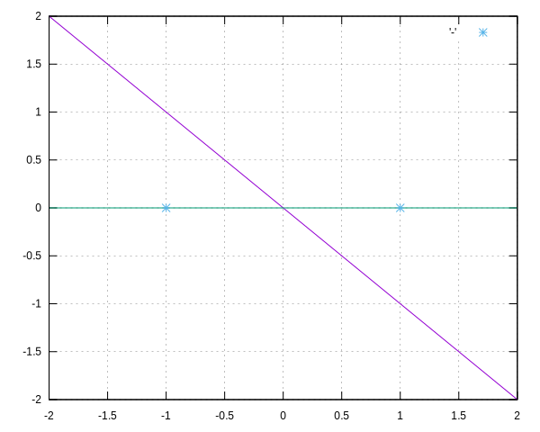
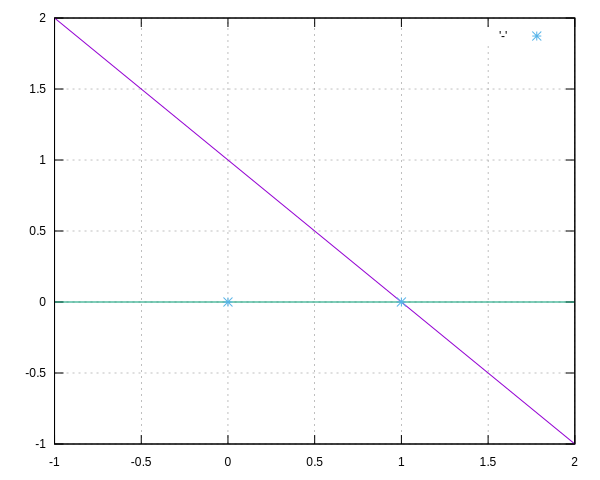
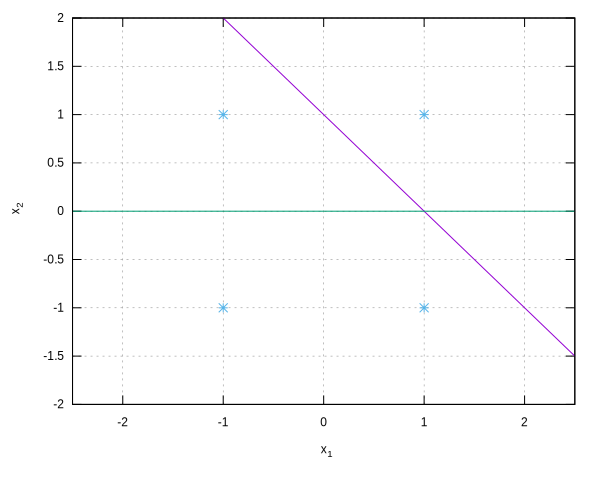
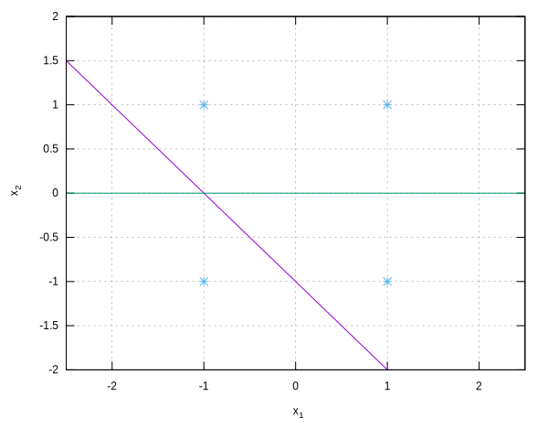
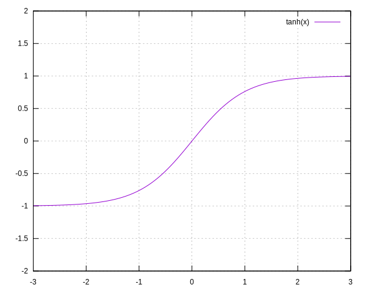
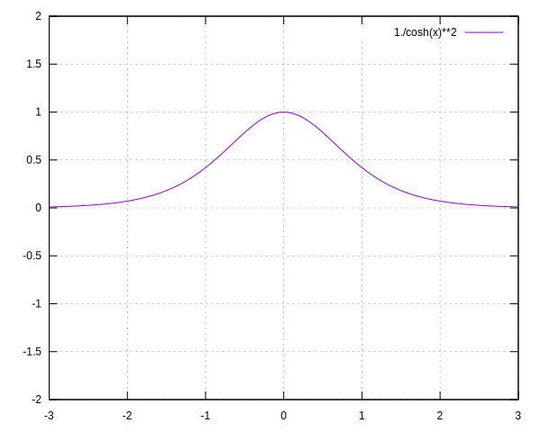

Network Description:
Network topology:
$l = $ number of layers.
$n_k = $ input size of the k'th layer.
$m_k = $ output size of the k'th layer.
More often than not I will be depicting these two as a sequence-of-pairs: $\{(m,n)\}$. Yes, that's right, the pair is (output dimension, input dimension), as per how matrix spaces are described as Cartesian products of the Real set.
$\sigma_k = $ k'th layer activation function.
Network state, independent of any signal:
$w_{k, i, j}(t) = $ k'th layer linear relation between i'th output and j'th input, at iteration "t"
for $1 \le k \le l$,
$1 \le i \le m_l$,
$1 \le j \le n_l$.
For networks with using bias, $1 \le j \le n_l+1$.
Yes I am conflating iteration and time. I don't care about time-dependent input data or state-based recurrent-networks right now.
$w_{k, i, j}(0) =$ initial weight value at iteration t=0. Weights are initialized randomly.
$W_k(t) = $ the k'th layer weights in matrix form. $W_k(t) \in \mathbb{R}^{(m_k \times n_k)}$.
Maybe sometimes I'll separate off the bias weights as a vector $B_k(t)$ to distinguish it from weights multiplied by inputs.
Network feed-forward live variables:
Inputs are provided from some external environment.
$x_{k, j}(t) =$ k'th layer j'th input, at iteration "t"
for $1 \le k \le l$ and $1 \le j \le n_l$.
For networks using bias, $1 \le j \le n_l + 1$, with $x_{k, n_l + 1}$ always assigned to 1.
$X_k(t) = $ k'th layer inputs in vector form.
$\xi_{k, i}(t) = \underset{j=1}{\overset{n_l+1}\Sigma} \left( w_{k, i, j}(t) \cdot x_{k, j}(t) \right) = $ k'th layer i'th output.
$\Xi_k(t) = W_k(t) X_k(t) =$ k'th layer accumulation in vector form.
If we are separating the bias from the weights then this will look like $\Xi_k(t) = B_k(t) + W_k(t) X_k(t)$.
So $\Xi_k$ is just a linear transformation of the inputs $X_k$.
$y_{k, i}(t) = \sigma_k ( \xi_{k, i}(t) ) = \sigma_k ( \Sigma_j w_{k, i, j}(t) \cdot x_{k, j}(t) ) = $ k'th layer output.
$Y_k(t) = \sigma( \Xi_k(t) ) =$ output in vector form.
$x_j(t) = x_{1, j}(t) =$ first layer j'th input = network j'th input.
$x_{k, j}(t) = y_{k-1, i}(t) =$ k'th layer j'th input = (k-1)'th layer j'th output.
$y_j(t) = y_{l, j}(t) = $ network output.
Network supervised training variables:
$d_j(t) = $ desired output (for trained data) for iteration "t".
$D(t) = $ desired in vector form.
$e_{l,j}(t) = d_j(t) - y_j(t) =$ residual of the output (with gradient towards the desired)
$E_l(t) =$ error of the last layer, in vector form.
$U(t) = \frac{1}{2} \Sigma_j (e_{l,j}(t))^2 = \frac{1}{2} || E_l(t) ||$ network energy function to minimize.
The one-half out front is to cancel the derivative of the square term, so the gradient becomes proportional to the residual vector.
There's the desired, and residual functions.
I might drop the "t" parameters and declare the dependency to be implicit, just like in physics.
Back-propagation update:
Supervised neural nets can be thought of as performing a gradient descent on an energy function.
Gradient descent towards a minima takes this form:
$\frac{\partial x_i}{\partial t} = -\frac{\partial U}{\partial x_i}$
... for some system state $x$ and some potential function $U(x)$.
In the case of our neural network,
the energy function is calculated as the distance squared from the output vector of the network to desired vector,
and the state vector is our weights $w_{k,i,j}$.
Update weights to minimize error:
$\frac{\partial w_{k,i,j}}{\partial t} = -\frac{\partial U}{\partial w_{k,i,j}}$
Gradient of the final layer weights:
$\frac{\partial U}{\partial w_{l,i,j}}
= \frac{\partial U}{\partial e_{l,a}}
\frac{\partial e_{l,a}}{\partial y_{l,b}}
\frac{\partial y_{l,b}}{\partial \xi_{l,c}}
\frac{\partial \xi_{l,c}}{\partial w_{l,i,j}}
$
$\frac{\partial U}{\partial e_{l,a}}
= \frac{\partial}{\partial e_{l,a}} \left( \frac{1}{2} \Sigma_b (e_{l,b})^2 \right)
= \Sigma_b \left( e_{l,b} \cdot \frac{\partial e_{l,b}}{\partial e_{l,a}} \right)
= \Sigma_b \left( e_{l,b} \cdot \delta_{ab} \right)
= e_{l,a}
$
$\frac{\partial e_{l,a}}{\partial y_{l,b}}
= \frac{\partial}{\partial y_{l,b}} \left( d_a - y_{l,a} \right)
= -\delta_{ab}
$
$\frac{\partial U}{\partial y_{l,b}} = -e_{l,b}$
Gradient calculations of variables that are valid for each layer:
$\frac{\partial y_{k,a}}{\partial \xi_{k,b}}
= \frac{\partial}{\partial \xi_{k,b}} \left( \sigma_k ( \xi_{k,a} ) \right)
= \sigma_k' ( \xi_{k,a} ) \frac{\partial \xi_{k,a}}{\partial \xi_{k,b}}
= \sigma_k' ( \xi_{k,a} ) \cdot \delta_{ab}
$
$\frac{\partial \xi_{k,b}}{\partial w_{k,i,j}}
= \frac{\partial}{\partial w_{k,i,j}} \left(w_{k, b, c} \cdot x_{k, c} \right)
= \frac{\partial}{\partial w_{k,i,j}} \left(w_{k, b, c}\right) \cdot x_{k, c}
= \delta_{ib} \delta_{jc} x_{k, c}
= \delta_{ib} x_{k, j}
$
$\frac{\partial y_{k,a}}{\partial x_{k,b}}
= \frac{\partial y_{k,a}}{\partial \xi_{k,c}}
\cdot \frac{\partial \xi_{k,c}}{\partial x_{k,b}}
= \sigma'_k(\xi_{k,a}) \delta_{ac}
\cdot \frac{\partial}{\partial x_{k,b}} \left( w_{k,c,d} x_{k,d} \right)
= \sigma'_k(\xi_{k,a}) \delta_{ac} w_{k,c,d}
\cdot \frac{\partial}{\partial x_{k,b}} \left( x_{k,d} \right)
= \sigma'_k(\xi_{k,a}) \delta_{ac} w_{k,c,d} \delta_{bd}
= \sigma'_k(\xi_{k,a}) w_{k,a,b}
$
$\frac{\partial U}{\partial x_{k,a}} = \frac{\partial U}{\partial y_{k,b}} \frac{\partial y_{k,b}}{\partial x_{k,a}} = \frac{\partial U}{\partial y_{k,b}} \sigma'_k(\xi_{k,b}) w_{k,b,a}$
Substitute our computed terms:
$\frac{\partial U}{\partial w_{l,i,j}}
= e_{l,a}
\cdot -\delta_{ab}
\cdot \sigma_l' (\xi_{l,b} ) \delta_{bc}
\cdot \delta_{ci} x_{l, j}
= -e_{l,i} \sigma_l' ( \xi_{l,i} ) x_{l, j}
$
$\frac{\partial w_{k,i,j}}{\partial t} = e_{l,i} \sigma_l' ( \xi_{l,i} ) x_{l, j}$
Gradient of previous layers weights:
$\frac{\partial U}{\partial w_{k,i,j}}
= \frac{\partial U}{\partial y_{k,a}}
\frac{\partial y_{k,a}}{\partial \xi_{k,b}}
\frac{\partial \xi_{k,b}}{\partial w_{k,i,j}}
= \frac{\partial U}{\partial y_{k,a}} \cdot \sigma'_k(\xi_a) \delta_{ab} \cdot \delta_{bi} x_{k,j}
= \frac{\partial U}{\partial x_{k+1,a}} \cdot \sigma'_k(\xi_a) \delta_{ab} \cdot \delta_{bi} x_{k,j}
$
A neural-network weight matrix is just a linear transform. The output test is typically looking at whether the output is greater than some value.
So assuming the activation is near-linear (which it tends to be for some domain),
we are really looking at a collection of hyperplanes that are forming a convex hull in our output space around whatever we want to classify.
From there, we can use the simplest possible numerical integration, Euler integration, to define our state update equation:
$w_{k,i,j}(t+\Delta t) = w_{k,i,j}(t) + \Delta t \cdot \frac{\partial w_{k,i,j}}{\partial t}
= w_{k,i,j}(t) - \Delta t \cdot \frac{\partial U}{\partial w_{k,i,j}}
$
Mind you there are many better integrators than this. A good starting place would be Runge-Kutta. Definitely look into the implicit integration schemes.
What are some other optimization techniques that we can apply to neural networks?
One easy solution is line search. Line search is just varying the $\Delta t$ for fixed $\frac{\partial w_{k,i,j}}{\partial t}$.
Second Derivatives
Another is incorporating second derivatives, as the Newton method does.
In this context of gradient descent, this looks like:
$w(t+\Delta t) = w(t) - (\nabla_w^2 U)^{-1} \cdot \nabla_w U$
... where $\nabla_w U$ is the column vector of $\frac{\partial U}{\partial w}$,
$\nabla_w^2 U$ is the matrix of components $\frac{\partial^2 U}{\partial w^2}$.
TODO numeric / progressive Hessian computation
TODO inverse Hessian computation
TODO Krylov subspace computation of Hessian ... and Krylov numeric implicit integration ... and do the two tie together?
Example: Logical-NOT
Let's look at a single-neuron with-bias trained to the logical-NOT problem.
We are going to classify true = 1 and false = -1.
This means our desired problem to reproduce is $y(x) = -x$:

Our output classification will be $y \gt 0$ for true, otherwise false.
Topology:
$l = 1, \{(m,n)\} = \{(1,1)\}$
$\sigma_1(x) = x = $ identity for activation function.
$y = \sigma(w x)$
State:
$w = w_{1, 1, 1} = $ weight that corresponds with our single input.
No bias is needed and no bias will be used.
Live variables:
$x = x_1 = x_{1, 1} = $ our network input, which will be +1 for true and -1 for false.
Notice that if you were to plot our x vs y, we are trying to reproduce the logical-NOT function $y(x) = -x$.
This means we won't need any extra linear terms. We don't need a bias term for our weight matrix.
If I picked false to be 0 then our output function of the input would be $y(x) = 1 - x$, which requires a bias value, and I would need to simulate a bias weight.
$\xi_{1, 1} = w x = $ the linear transform of our inputs, aka "net-accumulated sum of the neuron".
$y = y_1 = y_{1,1} = \sigma_1 ( \xi_{1,1} ) = \xi_{1,1} = w x = $ the network output.
Training variables:
$d = d_1 = $ our desired value, which will be $-x$. So if our input is 1 for true then our desired output will be -1 for false, and vice-versa.
$e = d - y = (-x) - w x = (-1 - w) x$
$U = \frac{1}{2} e^2 = \frac{1}{2} ((-1 - w) x )^2$
Weight updates:
$\frac{\partial w}{\partial t} = -\frac{\partial U}{\partial w} = -(1 + w) x^2 $
Fixed points are where $\frac{\partial w}{\partial t} = 0$. This is true for...
$0 = (1 + w) x^2 $
...which is true for $x = 0$, or for $w = -1$
So those are our dynamic system 2 fixed points.
We don't have to worry about the $x = 0$, since our inputs are either +1 or -1.
So we have fixed points at $w = -1$
Of course $w = -1$ is our desired answer, since we are trying to reproduce the behavior of the equation $y(x) = -x$, i.e. $y(x) = w x$ for $w = -1$.
Let's assume an Euler integration:
$w(t + \Delta t) = w(t) + \Delta t \cdot \frac{\partial w(t)}{\partial t}$
$w(t + \Delta t) = w(t) - \Delta t \cdot \frac{\partial U(t)}{\partial w(t)}$
$w(t + \Delta t) = w(t) - \Delta t \cdot (1 + w(t)) x(t)^2 = -\Delta t \cdot x(t)^2 + (1 - \Delta t \cdot x(t)^2) w(t)$
Dynamics classification says, for some sequence $x_n$:
$|\frac{\partial x_{n+1}}{\partial x_n}| \gt 1$ is a source, i.e. the system will diverge from this fixed point.
$|\frac{\partial x_{n+1}}{\partial x_n}| = 1$ is indeterminant. Or does this mean it will neither converge nor diverge? I forget...
$|\frac{\partial x_{n+1}}{\partial x_n}| \lt 1$ is a sink, i.e. the system will converge to this fixed point.
$|\frac{\partial x_{n+1}}{\partial x_n}| = 0$ is a super-critical sink, i.e. the system is stationary at this point.
$|\frac{\partial w(t + \Delta t)}{\partial w(t)}| = |1 - \Delta t \cdot x(t)^2|$
In either case our fixed point convergence is independent of our dynamic variable, the weight, and only dependent on the input magnitude.
If we provide $x(t) = 0$ as an input then our $|\frac{\partial w(t + \Delta t)}{\partial w(t)}| = 1$, which means we have indeterminant behavior neither converging nor diverging.
Now the fixed points are specific to the update, which is specific to our desired training value, which is defined as $\pm x$ for inputs $x \in \{ -1, 1 \}$, so good thing $x = 0$ isn't a valid true or false input.
For what values is the system converging?
$|\frac{\partial w(t + \Delta t)}{\partial w(t)}| = |1 - \Delta t \cdot x(t)^2| \lt 1$
$-1 \lt \Delta t \cdot x(t)^2 - 1 \lt 1$
$0 \lt \Delta t \cdot x(t)^2 \lt 2$
... assuming $\Delta t \gt 0$:
$0 \lt x(t)^2 \lt \frac{2}{\Delta t}$
This is true for $x \in (-\sqrt{\frac{2}{\Delta t}}, 0) \bigcup (0, \sqrt{\frac{2}{\Delta t}})$
If we use $x \in (-\sqrt{\frac{2}{\Delta t}}, 0) \bigcup (0, \sqrt{\frac{2}{\Delta t}})$ then we will converge.
For $x \gt 0$ values we will diverge.
Since our inputs are $x = \pm 1$, this tells us that we can only use a timestep:
$1 \lt \frac{2}{\Delta t}$
$\Delta t \lt 2$
TODO show convergence of the system while batch-averaging training using T and F together.
Logical-NOT using {0,1} and missing a bias weight
Now let's repeat the process with T/F set to {0,1}:
But let's not introduce a bias yet.
Our desired output is going to be $d(x) = 1 - x$ for $x \in \{0,1\}$:

Our output classification will be $y \ge \frac{1}{2}$ is true, $y \lt \frac{1}{2}$ is false.
$y = w x$
$e = d - y = 1 - x - w x$
$U = \frac{1}{2} e^2$
$\frac{\partial w}{\partial t} = -\frac{\partial U}{\partial w} = -e \frac{\partial e}{\partial w}$
$ = -e \cdot -x = e x = (d - y) x = (1 - x - w x) x$
We now have fixed points at $x = 0$ and $1 - (1 + w) x = 0$, i.e. $x = \frac{1}{1 + w}$ or $w = \frac{1}{x} - 1$
Let's look at the update to classify those inputs:
$w(t+\Delta t) = w(t) + \Delta t (1 - x - w x) x$
$|\frac{\partial w(t+\Delta t)}{\partial w(t)}| = |1 - x \Delta t|$
This is going to be in $(-1,1)$ for $|x \Delta t| \in (0,2)$
But notice that one of our inputs is $x=0$. Notice for this input, our fixed-point classification is now $|\frac{\partial w(t+\Delta t)}{\partial w(t)}|= 1$, and our system can no longer guarantee convergence.
Let's assume we are going to skip the $x=0$ inputs and just train this network with $x=1$ and $d(x) = 0$.
Then we still have a fixed point at $w = \frac{1}{x} - 1 = 0$. The convergence of this is based on $x \Delta t$, so as long as $x=1$ and we keep $\Delta t \in (0,2)$ then we will converge.
Our network converges to the equation $y = 0 \cdot x = 0$, which is an output of false for an input of true, so we did manage to classify one of our two inputs.
However then network will never be able to classify its false inputs correctly.
TODO now average T and F input training and see how the network behaves. Does it converge to still classify false correctly, or does it end up failing for both?
Now what if we add a bias weight to the $\{0,1\}$ classification network?
TODO.
$y = \sigma(w x + b)$
TODO repeat the process with non-identity $\sigma$, like tanh.
Then using tanh activation with T/F training outputs set to $\{-1,1\}$ vs $\{\frac{-9}{10}, \frac{9}{10}\}$.
Spoilers: $tanh(x) = \frac{9}{10}$ exists, so if we set our desired to $\pm \frac{9}{10}$ then our weights have a specific point they will converge to.
In contrast, there exists no x such that $tanh(x) = 1$, except for $\underset{x \rightarrow \infty}{\lim} tanh(x) = 1$, so if we set our desired to $\pm 1$ then our weight values will diverge forever while settling on the desired output.
Then using a sigmoid activation with T/F set to $\{0,1\}$ vs $\{\frac{1}{10}, \frac{9}{10}\}$ ... and with bias weight (two weight system now) since the classification needs to now fit to $y(x) = 1 - x$ instead of $y(x) = x$
Using sigmoid activation means $\sigma(0) = \frac{1}{2}$ and $\sigma'(0) = \frac{1}{4}$,
which means we cannot analyze the system using linear approximation ... unless we are analyzing $4 \sigma(x - \frac{1}{2}) \approx x$.
In contrast, using tanh activation means $\tanh(0) = 0$, $tanh'(0) = cosh^{-2}(0) = 1$, and $tanh(x) \approx x$.
Example: Logical-AND
We are going to classify true = 1 and false = -1, $y \gt 0$ for true, $y \le 0$ for false.
Therefore our desired problem to reproduce is something along the lines of:
$y(x_1, x_2) = \frac{1}{2} x_1 + \frac{1}{2} x_2 - \frac{1}{2}$, such that $y(-1,-1) = -\frac{3}{2} = F, y(-1,1) = -\frac{1}{2} = F, y(1,-1) = -\frac{1}{2} = F, y(1,1) = \frac{1}{2} = T$ .

TODO first try without the bias weight and see what happens / show that it can't fully classify all points ever, only 2 of the 3 false's at once at most.
Topology:
$l = 1, \{(m,n)\} = \{(1,2)\}$
$\sigma(x) = \sigma_1(x) = x =$ identity activation.
State:
$w_1 = w_{1,1,1}, w_2 = w_{1,1,2}, w_3 = w_{1,1,3}$ are our weights, (with $w_3$ being the bias input weight).
Live variables:
$x_1 = x_{1,1}; x_2 = x_{1,2}$ are our inputs.
$\xi_1 = w_1 x_1 + w_2 x_2 + w_3$
$y = \sigma(\xi_1) = w_1 x_1 + w_2 x_2 + w_3$
$y = b + W X$ for $W \in \mathbb{R}^{1 \times 2}$, $X \in \mathbb{R}^2$
Training variables:
We can do more exact with our description of our desired value as a function of our inputs, by multiplying our inputs,
however neural networks themselves are planes are linear transformations and cannot directly reproduce multiplication.
$d(x_1, x_2) = 2 \left( \frac{1}{2}(x_1 + 1) \cdot \frac{1}{2} (x_2 + 1) \right) - 1 = \frac{1}{2} (x_1 x_2 + x_1 + x_2 - 1)$.
This is chosen such that $d(-1,-1) = d(-1,1) = d(1,-1) = -1 =$ false, and $d(1,1) =$ true.
$e = d - y = \frac{1}{2} (x_1 x_2 + x_1 + x_2 - 1) - \left( w_1 x_1 + w_2 x_2 + w_3 \right)$
$e = \frac{1}{2} x_1 x_2 + \frac{1}{2} x_1 + \frac{1}{2} x_2 - \frac{1}{2} - w_1 x_1 - w_2 x_2 - w_3$
$U = \frac{1}{2} e^2
= \frac{1}{2} \left(
\frac{1}{2} x_1 x_2 + \frac{1}{2} x_1 + \frac{1}{2} x_2 - \frac{1}{2} - w_1 x_1 - w_2 x_2 - w_3
\right)^2$
$\frac{\partial U}{\partial w_i} = e \cdot \frac{\partial e}{\partial w_i}
= e \cdot \frac{\partial e}{\partial w_i}
= e \cdot -\frac{\partial y}{\partial w_i}
= -e x_i$
$\frac{\partial w_i(t)}{\partial t} = -\frac{\partial U}{\partial w_i} = e x_i$
$w_i(t + \Delta t) = w_i(t) + \Delta t (d - y) x_i$
$w_i(t + \Delta t) = w_i(t) + \Delta t (\frac{1}{2} (x_1 x_2 + x_1 + x_2 - 1) - (w_1 x_1 + w_2 x_2 + w_3)) x_i$
Fixed points:
$\frac{\partial w_i(t)}{\partial t} = 0$ for $x_i e = 0$.
One solution is $x_i = 0$.
Another is $e = 0$, i.e. for $w_1 x_1 + w_2 x_2 + w_3 - \frac{1}{2} (x_1 x_2 + x_1 + x_2 - 1) = 0$
This looks like a plane equation in $\{w_1, w_2, w_3\}$ space.
For our inputs this can be the possible values:
$x_1 = -1, x_2 = -1: -w_1 - w_2 + w_3 + 1 = 0$
$x_1 = 1, x_2 = -1: w_1 - w_2 + w_3 + 1 = 0$
$x_1 = -1, x_2 = 1: -w_1 + w_2 + w_3 + 1 = 0$
$x_1 = 1, x_2 = 1: w_1 + w_2 + w_3 - 1 = 0$
So for each possible set of inputs, our neural network state critical point will be a different plane.
Dynamics:
$|\frac{\partial w_i(t + \Delta t)}{\partial w_i(t)}| = |1 - \Delta t (x_i)^2|$ for $x_3 = 1$
$|\frac{\partial w_1(t + \Delta t)}{\partial w_1(t)}| = |1 - \Delta t (x_1)^2|$
$|\frac{\partial w_2(t + \Delta t)}{\partial w_2(t)}| = |1 - \Delta t (x_2)^2|$
$|\frac{\partial w_3(t + \Delta t)}{\partial w_3(t)}| = |1 - \Delta t|$
So as long as our inputs are $x_i = \pm 1$, and our timestep $\Delta t = 1$, our fixed point is super-critical.
So we are going to be always instantly converging on a solution per-input/desired pair, but that solution will vary over all possible pairs.
What if we look at the critical point of the system after iterating across all possible permutations of inputs/desired? I.e. equivalent to a "batch update" of all 4 possible inputs.
$w_i(t + \Delta t) = w_i(t) + \Delta t \frac{1}{4} ($
$
\ (\frac{1}{2} (x_1 x_2 + x_1 + x_2 - 1) - (w_1 x_1 + w_2 x_2 + w_3)) x_i | (x_1 = -1, x_2 = -1)$
$
+ (\frac{1}{2} (x_1 x_2 + x_1 + x_2 - 1) - (w_1 x_1 + w_2 x_2 + w_3)) x_i | (x_1 = 1, x_2 = -1)$
$
+ (\frac{1}{2} (x_1 x_2 + x_1 + x_2 - 1) - (w_1 x_1 + w_2 x_2 + w_3)) x_i | (x_1 = -1, x_2 = 1)$
$
+ (\frac{1}{2} (x_1 x_2 + x_1 + x_2 - 1) - (w_1 x_1 + w_2 x_2 + w_3)) x_i | (x_1 = 1, x_2 = 1)$
$
)$
Individually:
$\frac{\partial w_1(t)}{\partial t} = \frac{1}{4} \left(
- (-1 + w_1 + w_2 - w_3)
+ (-1 - w_1 + w_2 - w_3)
- (-1 + w_1 - w_2 - w_3)
+ ( 1 - w_1 - w_2 - w_3)
\right) = -w_1(t) + \frac{1}{2}$
$w_1(t + \Delta t) = w_1(t) \cdot (1 - \Delta t) + \frac{1}{2} \Delta t$
$\frac{\partial w_2(t)}{\partial t} = \frac{1}{4} \left(
- (-1 + w_1 + w_2 - w_3)
- (-1 - w_1 + w_2 - w_3)
+ (-1 + w_1 - w_2 - w_3)
+ ( 1 - w_1 - w_2 - w_3)
\right) = -w_2(t) + \frac{1}{2}$
$w_2(t + \Delta t) = w_2(t) \cdot (1 - \Delta t) + \frac{1}{2} \Delta t$
$\frac{\partial w_3(t)}{\partial t} = \frac{1}{4} \left(
(-1 + w_1 + w_2 - w_3)
+ (-1 - w_1 + w_2 - w_3)
+ (-1 + w_1 - w_2 - w_3)
+ ( 1 - w_1 - w_2 - w_3)
\right) = -w_3(t) - \frac{1}{2}$
$w_3(t + \Delta t) = w_3(t) \cdot (1 - \Delta t) - \frac{1}{2} \Delta t$
Our fixed point of $\frac{\partial w_i(t)}{\partial t} = 0$ shows up for $w_1 = \frac{1}{2}, w_2 = \frac{1}{2}, w_3 = -\frac{1}{2}$.
With these weights, our neural network reproduces the eqution:
$y(x_1, x_2) = w_1 x_1 + w_2 x_2 + w_3 = \frac{1}{2} x_1 + \frac{1}{2} x_2 - \frac{1}{2}$
... just like we were looking for.
In each case:
$|\frac{\partial w(t+\Delta t)}{\partial w(t)}| = |1 - \Delta t|$
... which will converge for $\Delta t \in (0,2)$, and is super-critical for $\Delta t = 1$.
However notice that these weights are a fixed point only when we average all four of our input/desired updates together.
Once our network is in the optimal state of $(w_1, w_2, w_3) = (\frac{1}{2}, \frac{1}{2}, -\frac{1}{2})$, if we then go on to perform another update with a single input/desired pair, we will find that $\frac{\partial w(t+\Delta t)}{\partial t} \ne 0$ and we are not at a fixed point.
This mean our network will continue to oscillate forever near the optimal solution but will never settle completely.
TODO next do classification of OR problem with 1-layer.
Spoilers, it is the same solution except with a different $w_3$ bias term (probably $\frac{1}{2}$) such that (1,1), (1,-1), and (-1,1) produce a result > 0 and (-1,-1) produces a result < 0.
You can repeat the previous problem except with a new desired function
$d(x_1, x_2) = 1 - 2 \left( \frac{1}{2}(1 - x_1) \cdot \frac{1}{2} (1 - x_2) \right) = \frac{1}{2} (-x_1 x_2 + x_1 + x_2 + 1)$
such that $d(-1,-1) = -1 =$ false and $d(-1,1) = d(1,-1) = d(1,1) = 1 =$ true
to verify this.

TODO show how AND, OR, NAND, NOR, and any other classification that includes 3 and excludes 1 or vice versa is all just the same problem, with different signs on the weights.
TODO show how for 3 inputs, any combo of AND's, OR's, and NOT's that produces a single true and 7 falses (or vice versa), is just a single-layer 3x1 weight network, thanks to a single plane dividing all trues vs falses.
TODO show for n inputs, and only a single ouptut that is T and all $2^n-1$ others F (or inverse), we just need a single-layer nx1 weight network.
Logical XOR
Unlike Logical-AND or Logical-OR, Logical-XOR cannot divide its space of true vs false.
Assuming our previous convention of false = -1 and true = 1,
we now have to classify a problem $d(-1, -1) = d(1,1) = -1$ and $d(1,-1) = d(-1,1) = 1$.
One simple mathematical solution to this is $d(x_1, x_2) = -x_1 x_2$, so we can use this as our desired/training function, but once again, neural networks cannot reproduce input multiplication, only linear functions of the inputs.
There is no single plane that classifies all the outputs.
Instead we are going to need two planes to classify our output.
Those two planes in theory should settle to one of two configurations...
TODO graph of planes in the middle pointing outwards to the (T,F) an (F,T) points an OR of the two classifications ...
... versus planes near the (T,T) and (F,F) points pointing inwards as an AND of the two classifications.
Let's try with just 1 layer.
$l = 1, \{(m,n)\} = \{(1,2)\}$
Let's also keep using identity activation:
$\sigma(x) = x$
...however we're going to find out soon that, if we use a 2-layer network with identity activation, it degenerates into a 1-layer network, and back to our original statement that XOR cannot be reproduced with a 1-layer network, this also means XOR cannot be reproduced with a 2-layer identity-activation network:
$Y = \sigma_2 ( W_2 \sigma_1 (W_1 X + B_1) + B_2 )$
... let $\sigma_i = $ identity...
$Y = ( W_2 (W_1 X + B_1) + B_2 )$
$Y = W_2 W_1 X + W_2 B_1 + B_2$
... let $W' = W_2 W_1$ and $B' = W_2 B_1 + B_2$:
$Y = W' X + B'$
So here we see a two-layer network with no activation is really just a 1-layer network.
But TODO keep running with the identity-activation and see if the XOR network does converge or not.
We are going to be reproducing the logic of $A \oplus B = (\lnot A \land B) \lor (A \land \lnot B)$.
We can break this down into a $\lnot A \land B$ operation ...
TODO graph of dividing plane of solution space.
... and a $A \land \lnot B$ operation ...
TODO graph of dividing plane of solution space.
... and then a $\cdot \lor \cdot$ operation...
TODO graph of dividing plane of solution space.
We can equivalently do the same with the De Morgan's Law applied to the system, so the last operation is an AND instead of an OR.
To do this we're going to be reproducing 3 different AND/OR problems. Each takes 3 weights, so we are going to need 9 weights total.
So we will need a nonlinear activation on the first later at least:
$\sigma_1(x) = tanh(x)$

...with derivative...
$\sigma'_1(x) = (cosh(x))^{-2} = 1 - (tanh(x))^2$

...but we will keep the 2nd layer identity.
$\sigma_2(x) = x$
Notice the identity $\sigma'_1(x) = 1 - (tanh(x))^2$ allows us to use the trick that, for $y = tanh(x), \frac{\partial y}{\partial x} = 1 - y^2$
Topology:
$l = 2, \{(m,n)\} = \{(2,2), (1,2)\}$
$X = X_1$, i.e. the first-layer input is the network input.
$\Xi_1 = B_1 + W_1 X_1$, describes the 1st layer accumulation, i.e.:
$\xi_{1,1} = b_{1,1} + w_{1,1,1} x_{1,1} + w_{1,1,2} x_{1,2}$
$\xi_{1,2} = b_{1,2} + w_{1,2,1} x_{1,1} + w_{1,2,2} x_{1,2}$
$Y_1 = \sigma_1(\Xi_1) = \sigma_1(B_1 + W_1 X_1)$, describes the 1st layer propagation, i.e.:
$y_{1,1} = \sigma_1(\xi_{1,1}) = \sigma_1(b_{1,1} + w_{1,1,1} x_{1,1} + w_{1,1,2} x_{1,2})$
$y_{1,2} = \sigma_1(\xi_{1,2}) = \sigma_1(b_{1,2} + w_{1,2,1} x_{1,1} + w_{1,2,2} x_{1,2})$
$X_2 = Y_1$, i.e. the second-layer input is the first-layer output.
$\Xi_2 = B_2 + W_2 X_2$, describes the 2nd layer accumulation, i.e.:
$\xi_{2,1} = b_{2,1} + w_{2,1,1} x_{2,1}$
$Y = Y_2 = \sigma_2(\Xi_2) = \sigma_2(B_2 + W_2 X_2) = \sigma_2(B_2 + W_2 \sigma_1(B_1 + W_1 X_1))$, is the 2nd layer propagation, i.e.:
$y_{2,1} = \sigma_2(b_{2,1} + w_{2,1,1} x_{2,1} + w_{2,1,2} x_{2,2})$
$y_{2,1} = b_{2,1} + w_{2,1,1} x_{2,1} + w_{2,1,2} x_{2,2}$
$y_{2,1} = b_{2,1} + w_{2,1,1} y_{1,1} + w_{2,1,2} y_{1,2}$
$y_{2,1} = b_{2,1} + w_{2,1,1} \sigma_1(b_{1,1} + w_{1,1,1} x_{1,1} + w_{1,1,2} x_{1,2}) + w_{2,1,2} \sigma_1(b_{1,2} + w_{1,2,1} x_{1,1} + w_{1,2,2} x_{1,2})$
Now comes the updates...
$\frac{\partial b_{2,1}}{\partial t} = -x_{1,1} x_{1,2} - y_{2,1}$
$\frac{\partial w_{2,1,1}}{\partial t} = (-x_{1,1} x_{1,2} - y_{2,1}) y_{1,1}$
$\frac{\partial w_{2,1,2}}{\partial t} = (-x_{1,1} x_{1,2} - y_{2,1}) y_{1,2}$
$\frac{\partial b_{1,1}}{\partial t} = (-x_{1,1} x_{1,2} - y_{2,1}) w_{2,1,1} \sigma'_1(\xi_{1,1})$
$\frac{\partial w_{1,1,1}}{\partial t} = (-x_{1,1} x_{1,2} - y_{2,1}) w_{2,1,1} \sigma'_1(\xi_{1,1}) x_{1,1}$
$\frac{\partial w_{1,1,2}}{\partial t} = (-x_{1,1} x_{1,2} - y_{2,1}) w_{2,1,1} \sigma'_1(\xi_{1,1}) x_{1,2}$
$\frac{\partial b_{1,2}}{\partial t} = (-x_{1,1} x_{1,2} - y_{2,1}) w_{2,1,2} \sigma'_1(\xi_{1,2})$
$\frac{\partial w_{1,2,1}}{\partial t} = (-x_{1,1} x_{1,2} - y_{2,1}) w_{2,1,2} \sigma'_1(\xi_{1,2}) x_{1,1}$
$\frac{\partial w_{1,2,2}}{\partial t} = (-x_{1,1} x_{1,2} - y_{2,1}) w_{2,1,2} \sigma'_1(\xi_{1,2}) x_{1,2}$
The equation is at a critical point where This is zero, which is ...
$\frac{\partial b_{2,1}}{\partial t} = 0$,
for $y_{2,1} = -x_{1,1} x_{1,2}$.
$\frac{\partial w_{2,1,1}}{\partial t} = (-x_{1,1} x_{1,2} - y_{2,1}) y_{1,1} = 0$,
for $y_{2,1} = -x_{1,1} x_{1,2}$ or $y_{1,1} = 0$.
$\frac{\partial w_{2,1,2}}{\partial t} = (-x_{1,1} x_{1,2} - y_{2,1}) y_{1,2} = 0$,
for $y_{2,1} = -x_{1,1} x_{1,2}$ or $y_{1,2} = 0$.
$\frac{\partial b_{1,1}}{\partial t} = (-x_{1,1} x_{1,2} - y_{2,1}) w_{2,1,1} \sigma'_1(\xi_{1,1})$,
for $y_{2,1} = -x_{1,1} x_{1,2}$ or $w_{2,1,1} = 0$, or $\sigma'_1(\xi_{1,1}) = 0$.
$\frac{\partial w_{1,1,1}}{\partial t} = (-x_{1,1} x_{1,2} - y_{2,1}) w_{2,1,1} \sigma'_1(\xi_{1,1}) x_{1,1}$,
for $y_{2,1} = -x_{1,1} x_{1,2}$ or $w_{2,1,1} = 0$, or $\sigma'_1(\xi_{1,1}) = 0$, or $x_{1,1} = 0$.
$\frac{\partial w_{1,1,2}}{\partial t} = (-x_{1,1} x_{1,2} - y_{2,1}) w_{2,1,1} \sigma'_1(\xi_{1,1}) x_{1,2}$
for $y_{2,1} = -x_{1,1} x_{1,2}$ or $w_{2,1,1} = 0$, or $\sigma'_1(\xi_{1,1}) = 0$, or $x_{1,2} = 0$.
$\frac{\partial b_{1,2}}{\partial t} = (-x_{1,1} x_{1,2} - y_{2,1}) w_{2,1,2} \sigma'_1(\xi_{1,2})$,
for $y_{2,1} = -x_{1,1} x_{1,2}$ or $w_{2,1,2} = 0$, or $\sigma'_1(\xi_{1,2}) = 0$.
$\frac{\partial w_{1,2,1}}{\partial t} = (-x_{1,1} x_{1,2} - y_{2,1}) w_{2,1,2} \sigma'_1(\xi_{1,2}) x_{1,1}$
for $y_{2,1} = -x_{1,1} x_{1,2}$ or $w_{2,1,2} = 0$, or $\sigma'_1(\xi_{1,2}) = 0$, or $x_{1,1} = 0$.
$\frac{\partial w_{1,2,2}}{\partial t} = (-x_{1,1} x_{1,2} - y_{2,1}) w_{2,1,2} \sigma'_1(\xi_{1,2}) x_{1,2}$
for $y_{2,1} = -x_{1,1} x_{1,2}$ or $w_{2,1,2} = 0$, or $\sigma'_1(\xi_{1,2}) = 0$, or $x_{1,2} = 0$.
From here we can ignore our $x_{1,1} = 0$ and $x_{1,2} = 0$ solutions since we are never feeding those value into the network.
We can ignore our $\sigma'_1(x) = 0$ answers since 0 is not in the range of $\sigma'_1(x)$.
This leaves us with $y_{2,1} = -x_{1,1} x_{1,2}$ for all weights,
or $y_{1,1} = 0$ for $\frac{\partial w_{2,1,1}}{\partial t}$,
or $y_{1,2} = 0$ for $\frac{\partial w_{2,1,2}}{\partial t}$,
or $w_{2,1,1} = 0$ for $\frac{\partial b_{1,1}}{\partial t}$ and $\frac{\partial w_{1,1,1}}{\partial t}$ and $\frac{\partial w_{1,1,2}}{\partial t}$,
or $w_{2,1,2} = 0$ for $\frac{\partial b_{1,2}}{\partial t}$ and $\frac{\partial w_{1,2,1}}{\partial t}$ and $\frac{\partial w_{1,2,2}}{\partial t}$.
TODO maybe I'll analyze specific critical points and behaviors for indivudal inputs later.
Now let's do like we did with AND and OR, and let's average together all our inputs to see where the global behavior of the training data will converge.
Like before, we are averaging the updates for $X = \{ (-1,-1), (-1,1), (1,-1), (1,1) \}$.
Let's evaluate them for curiousity's sake:
$y_{2,1}(-1,-1) = b_{2,1} + w_{2,1,1} \sigma_1(b_{1,1} - w_{1,1,1} - w_{1,1,2}) + w_{2,1,2} \sigma_1(b_{1,2} - w_{1,2,1} - w_{1,2,2})$
$y_{2,1}(-1, 1) = b_{2,1} + w_{2,1,1} \sigma_1(b_{1,1} - w_{1,1,1} + w_{1,1,2}) + w_{2,1,2} \sigma_1(b_{1,2} - w_{1,2,1} + w_{1,2,2})$
$y_{2,1}( 1,-1) = b_{2,1} + w_{2,1,1} \sigma_1(b_{1,1} + w_{1,1,1} - w_{1,1,2}) + w_{2,1,2} \sigma_1(b_{1,2} + w_{1,2,1} - w_{1,2,2})$
$y_{2,1}( 1, 1) = b_{2,1} + w_{2,1,1} \sigma_1(b_{1,1} + w_{1,1,1} + w_{1,1,2}) + w_{2,1,2} \sigma_1(b_{1,2} + w_{1,2,1} + w_{1,2,2})$
Now lets average those four possible values together for our gradient update and see where our network will converge to:
$\frac{\partial b_{2,1}}{\partial t} = -\frac{1}{4} ($
$+ 1 + b_{2,1} + w_{2,1,1} \sigma_1(b_{1,1} - w_{1,1,1} - w_{1,1,2}) + w_{2,1,2} \sigma_1(b_{1,2} - w_{1,2,1} - w_{1,2,2})$
$- 1 + b_{2,1} + w_{2,1,1} \sigma_1(b_{1,1} - w_{1,1,1} + w_{1,1,2}) + w_{2,1,2} \sigma_1(b_{1,2} - w_{1,2,1} + w_{1,2,2})$
$- 1 + b_{2,1} + w_{2,1,1} \sigma_1(b_{1,1} + w_{1,1,1} - w_{1,1,2}) + w_{2,1,2} \sigma_1(b_{1,2} + w_{1,2,1} - w_{1,2,2})$
$+ 1 + b_{2,1} + w_{2,1,1} \sigma_1(b_{1,1} + w_{1,1,1} + w_{1,1,2}) + w_{2,1,2} \sigma_1(b_{1,2} + w_{1,2,1} + w_{1,2,2})$
$)$
$\frac{\partial w_{2,1,1}}{\partial t} = -\frac{1}{4}($
$+ ( 1 + b_{2,1} + w_{2,1,1} \sigma_1(b_{1,1} - w_{1,1,1} - w_{1,1,2}) + w_{2,1,2} \sigma_1(b_{1,2} - w_{1,2,1} - w_{1,2,2})) \sigma_1(b_{1,1} - w_{1,1,1} - w_{1,1,2})$
$+ ( -1 + b_{2,1} + w_{2,1,1} \sigma_1(b_{1,1} - w_{1,1,1} + w_{1,1,2}) + w_{2,1,2} \sigma_1(b_{1,2} - w_{1,2,1} + w_{1,2,2})) \sigma_1(b_{1,1} - w_{1,1,1} + w_{1,1,2})$
$+ ( -1 + b_{2,1} + w_{2,1,1} \sigma_1(b_{1,1} + w_{1,1,1} - w_{1,1,2}) + w_{2,1,2} \sigma_1(b_{1,2} + w_{1,2,1} - w_{1,2,2})) \sigma_1(b_{1,1} + w_{1,1,1} - w_{1,1,2})$
$+ ( 1 + b_{2,1} + w_{2,1,1} \sigma_1(b_{1,1} + w_{1,1,1} + w_{1,1,2}) + w_{2,1,2} \sigma_1(b_{1,2} + w_{1,2,1} + w_{1,2,2})) \sigma_1(b_{1,1} + w_{1,1,1} + w_{1,1,2})$
$)$
$\frac{\partial w_{2,1,2}}{\partial t} = -\frac{1}{4} ($
$+ ( 1 + b_{2,1} + w_{2,1,1} \sigma_1(b_{1,1} - w_{1,1,1} - w_{1,1,2}) + w_{2,1,2} \sigma_1(b_{1,2} - w_{1,2,1} - w_{1,2,2})) \sigma_1(b_{1,2} - w_{1,2,1} - w_{1,2,2})$
$+ ( -1 + b_{2,1} + w_{2,1,1} \sigma_1(b_{1,1} - w_{1,1,1} + w_{1,1,2}) + w_{2,1,2} \sigma_1(b_{1,2} - w_{1,2,1} + w_{1,2,2})) \sigma_1(b_{1,2} - w_{1,2,1} + w_{1,2,2})$
$+ ( -1 + b_{2,1} + w_{2,1,1} \sigma_1(b_{1,1} + w_{1,1,1} - w_{1,1,2}) + w_{2,1,2} \sigma_1(b_{1,2} + w_{1,2,1} - w_{1,2,2})) \sigma_1(b_{1,2} + w_{1,2,1} - w_{1,2,2})$
$+ ( 1 + b_{2,1} + w_{2,1,1} \sigma_1(b_{1,1} + w_{1,1,1} + w_{1,1,2}) + w_{2,1,2} \sigma_1(b_{1,2} + w_{1,2,1} + w_{1,2,2})) \sigma_1(b_{1,2} + w_{1,2,1} + w_{1,2,2})$
$)$
$\frac{\partial b_{1,1}}{\partial t} = -\frac{1}{4} ($
$+ ( 1 + b_{2,1} + w_{2,1,1} \sigma_1(b_{1,1} - w_{1,1,1} - w_{1,1,2}) + w_{2,1,2} \sigma_1(b_{1,2} - w_{1,2,1} - w_{1,2,2})) w_{2,1,1} \sigma'_1(b_{1,1} - w_{1,1,1} - w_{1,1,2})$
$+ ( -1 + b_{2,1} + w_{2,1,1} \sigma_1(b_{1,1} - w_{1,1,1} + w_{1,1,2}) + w_{2,1,2} \sigma_1(b_{1,2} - w_{1,2,1} + w_{1,2,2})) w_{2,1,1} \sigma'_1(b_{1,1} - w_{1,1,1} + w_{1,1,2})$
$+ ( -1 + b_{2,1} + w_{2,1,1} \sigma_1(b_{1,1} + w_{1,1,1} - w_{1,1,2}) + w_{2,1,2} \sigma_1(b_{1,2} + w_{1,2,1} - w_{1,2,2})) w_{2,1,1} \sigma'_1(b_{1,1} + w_{1,1,1} - w_{1,1,2})$
$+ ( 1 + b_{2,1} + w_{2,1,1} \sigma_1(b_{1,1} + w_{1,1,1} + w_{1,1,2}) + w_{2,1,2} \sigma_1(b_{1,2} + w_{1,2,1} + w_{1,2,2})) w_{2,1,1} \sigma'_1(b_{1,1} + w_{1,1,1} + w_{1,1,2})$
$)$
$\frac{\partial w_{1,1,1}}{\partial t} = -\frac{1}{4} ($
$- ( 1 + b_{2,1} + w_{2,1,1} \sigma_1(b_{1,1} - w_{1,1,1} - w_{1,1,2}) + w_{2,1,2} \sigma_1(b_{1,2} - w_{1,2,1} - w_{1,2,2})) w_{2,1,1} \sigma'_1(b_{1,1} - w_{1,1,1} - w_{1,1,2})$
$- ( -1 + b_{2,1} + w_{2,1,1} \sigma_1(b_{1,1} - w_{1,1,1} + w_{1,1,2}) + w_{2,1,2} \sigma_1(b_{1,2} - w_{1,2,1} + w_{1,2,2})) w_{2,1,1} \sigma'_1(b_{1,1} - w_{1,1,1} + w_{1,1,2})$
$+ ( -1 + b_{2,1} + w_{2,1,1} \sigma_1(b_{1,1} + w_{1,1,1} - w_{1,1,2}) + w_{2,1,2} \sigma_1(b_{1,2} + w_{1,2,1} - w_{1,2,2})) w_{2,1,1} \sigma'_1(b_{1,1} + w_{1,1,1} - w_{1,1,2})$
$+ ( 1 + b_{2,1} + w_{2,1,1} \sigma_1(b_{1,1} + w_{1,1,1} + w_{1,1,2}) + w_{2,1,2} \sigma_1(b_{1,2} + w_{1,2,1} + w_{1,2,2})) w_{2,1,1} \sigma'_1(b_{1,1} + w_{1,1,1} + w_{1,1,2})$
$)$
$\frac{\partial w_{1,1,2}}{\partial t} = -\frac{1}{4} ($
$- ( 1 + b_{2,1} + w_{2,1,1} \sigma_1(b_{1,1} - w_{1,1,1} - w_{1,1,2}) + w_{2,1,2} \sigma_1(b_{1,2} - w_{1,2,1} - w_{1,2,2})) w_{2,1,1} \sigma'_1(b_{1,1} - w_{1,1,1} - w_{1,1,2})$
$+ ( -1 + b_{2,1} + w_{2,1,1} \sigma_1(b_{1,1} - w_{1,1,1} + w_{1,1,2}) + w_{2,1,2} \sigma_1(b_{1,2} - w_{1,2,1} + w_{1,2,2})) w_{2,1,1} \sigma'_1(b_{1,1} - w_{1,1,1} + w_{1,1,2})$
$- ( -1 + b_{2,1} + w_{2,1,1} \sigma_1(b_{1,1} + w_{1,1,1} - w_{1,1,2}) + w_{2,1,2} \sigma_1(b_{1,2} + w_{1,2,1} - w_{1,2,2})) w_{2,1,1} \sigma'_1(b_{1,1} + w_{1,1,1} - w_{1,1,2})$
$+ ( 1 + b_{2,1} + w_{2,1,1} \sigma_1(b_{1,1} + w_{1,1,1} + w_{1,1,2}) + w_{2,1,2} \sigma_1(b_{1,2} + w_{1,2,1} + w_{1,2,2})) w_{2,1,1} \sigma'_1(b_{1,1} + w_{1,1,1} + w_{1,1,2})$
$)$
$\frac{\partial b_{1,2}}{\partial t} = -\frac{1}{4} ($
$+ ( 1 + b_{2,1} + w_{2,1,1} \sigma_1(b_{1,1} - w_{1,1,1} - w_{1,1,2}) + w_{2,1,2} \sigma_1(b_{1,2} - w_{1,2,1} - w_{1,2,2})) w_{2,1,2} \sigma'_1(b_{1,2} - w_{1,2,1} - w_{1,2,2})$
$+ ( -1 + b_{2,1} + w_{2,1,1} \sigma_1(b_{1,1} - w_{1,1,1} + w_{1,1,2}) + w_{2,1,2} \sigma_1(b_{1,2} - w_{1,2,1} + w_{1,2,2})) w_{2,1,2} \sigma'_1(b_{1,2} - w_{1,2,1} + w_{1,2,2})$
$+ ( -1 + b_{2,1} + w_{2,1,1} \sigma_1(b_{1,1} + w_{1,1,1} - w_{1,1,2}) + w_{2,1,2} \sigma_1(b_{1,2} + w_{1,2,1} - w_{1,2,2})) w_{2,1,2} \sigma'_1(b_{1,2} + w_{1,2,1} - w_{1,2,2})$
$+ ( 1 + b_{2,1} + w_{2,1,1} \sigma_1(b_{1,1} + w_{1,1,1} + w_{1,1,2}) + w_{2,1,2} \sigma_1(b_{1,2} + w_{1,2,1} + w_{1,2,2})) w_{2,1,2} \sigma'_1(b_{1,2} + w_{1,2,1} + w_{1,2,2})$
$)$
$\frac{\partial w_{1,2,1}}{\partial t} = -\frac{1}{4} ($
$- ( 1 + b_{2,1} + w_{2,1,1} \sigma_1(b_{1,1} - w_{1,1,1} - w_{1,1,2}) + w_{2,1,2} \sigma_1(b_{1,2} - w_{1,2,1} - w_{1,2,2})) w_{2,1,2} \sigma'_1(b_{1,2} - w_{1,2,1} - w_{1,2,2})$
$- ( -1 + b_{2,1} + w_{2,1,1} \sigma_1(b_{1,1} - w_{1,1,1} + w_{1,1,2}) + w_{2,1,2} \sigma_1(b_{1,2} - w_{1,2,1} + w_{1,2,2})) w_{2,1,2} \sigma'_1(b_{1,2} - w_{1,2,1} + w_{1,2,2})$
$+ ( -1 + b_{2,1} + w_{2,1,1} \sigma_1(b_{1,1} + w_{1,1,1} - w_{1,1,2}) + w_{2,1,2} \sigma_1(b_{1,2} + w_{1,2,1} - w_{1,2,2})) w_{2,1,2} \sigma'_1(b_{1,2} + w_{1,2,1} - w_{1,2,2})$
$+ ( 1 + b_{2,1} + w_{2,1,1} \sigma_1(b_{1,1} + w_{1,1,1} + w_{1,1,2}) + w_{2,1,2} \sigma_1(b_{1,2} + w_{1,2,1} + w_{1,2,2})) w_{2,1,2} \sigma'_1(b_{1,2} + w_{1,2,1} + w_{1,2,2})$
$)$
$\frac{\partial w_{1,2,2}}{\partial t} = -\frac{1}{4} ($
$- ( 1 + b_{2,1} + w_{2,1,1} \sigma_1(b_{1,1} - w_{1,1,1} - w_{1,1,2}) + w_{2,1,2} \sigma_1(b_{1,2} - w_{1,2,1} - w_{1,2,2})) w_{2,1,2} \sigma'_1(b_{1,2} - w_{1,2,1} - w_{1,2,2})$
$+ ( -1 + b_{2,1} + w_{2,1,1} \sigma_1(b_{1,1} - w_{1,1,1} + w_{1,1,2}) + w_{2,1,2} \sigma_1(b_{1,2} - w_{1,2,1} + w_{1,2,2})) w_{2,1,2} \sigma'_1(b_{1,2} - w_{1,2,1} + w_{1,2,2})$
$- ( -1 + b_{2,1} + w_{2,1,1} \sigma_1(b_{1,1} + w_{1,1,1} - w_{1,1,2}) + w_{2,1,2} \sigma_1(b_{1,2} + w_{1,2,1} - w_{1,2,2})) w_{2,1,2} \sigma'_1(b_{1,2} + w_{1,2,1} - w_{1,2,2})$
$+ ( 1 + b_{2,1} + w_{2,1,1} \sigma_1(b_{1,1} + w_{1,1,1} + w_{1,1,2}) + w_{2,1,2} \sigma_1(b_{1,2} + w_{1,2,1} + w_{1,2,2})) w_{2,1,2} \sigma'_1(b_{1,2} + w_{1,2,1} + w_{1,2,2})$
$)$
...which becomes...
$\frac{\partial b_{2,1}}{\partial t} = -b_{2,1} $
$- \frac{1}{4} w_{2,1,1} ($
$+ \sigma_1(b_{1,1} - w_{1,1,1} - w_{1,1,2})$
$+ \sigma_1(b_{1,1} - w_{1,1,1} + w_{1,1,2})$
$+ \sigma_1(b_{1,1} + w_{1,1,1} - w_{1,1,2})$
$+ \sigma_1(b_{1,1} + w_{1,1,1} + w_{1,1,2})$
$)$
$- \frac{1}{4} w_{2,1,2} ($
$+ \sigma_1(b_{1,2} - w_{1,2,1} - w_{1,2,2})$
$+ \sigma_1(b_{1,2} - w_{1,2,1} + w_{1,2,2})$
$+ \sigma_1(b_{1,2} + w_{1,2,1} - w_{1,2,2})$
$+ \sigma_1(b_{1,2} + w_{1,2,1} + w_{1,2,2})$
$)$
$\frac{\partial w_{2,1,1}}{\partial t} = -\frac{1}{4}($
$+ ( 1 + b_{2,1} + w_{2,1,1} \sigma_1(b_{1,1} - w_{1,1,1} - w_{1,1,2}) + w_{2,1,2} \sigma_1(b_{1,2} - w_{1,2,1} - w_{1,2,2})) \sigma_1(b_{1,1} - w_{1,1,1} - w_{1,1,2})$
$+ ( -1 + b_{2,1} + w_{2,1,1} \sigma_1(b_{1,1} - w_{1,1,1} + w_{1,1,2}) + w_{2,1,2} \sigma_1(b_{1,2} - w_{1,2,1} + w_{1,2,2})) \sigma_1(b_{1,1} - w_{1,1,1} + w_{1,1,2})$
$+ ( -1 + b_{2,1} + w_{2,1,1} \sigma_1(b_{1,1} + w_{1,1,1} - w_{1,1,2}) + w_{2,1,2} \sigma_1(b_{1,2} + w_{1,2,1} - w_{1,2,2})) \sigma_1(b_{1,1} + w_{1,1,1} - w_{1,1,2})$
$+ ( 1 + b_{2,1} + w_{2,1,1} \sigma_1(b_{1,1} + w_{1,1,1} + w_{1,1,2}) + w_{2,1,2} \sigma_1(b_{1,2} + w_{1,2,1} + w_{1,2,2})) \sigma_1(b_{1,1} + w_{1,1,1} + w_{1,1,2})$
$)$
$\frac{\partial w_{2,1,2}}{\partial t} = -\frac{1}{4} ($
$+ ( 1 + b_{2,1} + w_{2,1,1} \sigma_1(b_{1,1} - w_{1,1,1} - w_{1,1,2}) + w_{2,1,2} \sigma_1(b_{1,2} - w_{1,2,1} - w_{1,2,2})) \sigma_1(b_{1,2} - w_{1,2,1} - w_{1,2,2})$
$+ ( -1 + b_{2,1} + w_{2,1,1} \sigma_1(b_{1,1} - w_{1,1,1} + w_{1,1,2}) + w_{2,1,2} \sigma_1(b_{1,2} - w_{1,2,1} + w_{1,2,2})) \sigma_1(b_{1,2} - w_{1,2,1} + w_{1,2,2})$
$+ ( -1 + b_{2,1} + w_{2,1,1} \sigma_1(b_{1,1} + w_{1,1,1} - w_{1,1,2}) + w_{2,1,2} \sigma_1(b_{1,2} + w_{1,2,1} - w_{1,2,2})) \sigma_1(b_{1,2} + w_{1,2,1} - w_{1,2,2})$
$+ ( 1 + b_{2,1} + w_{2,1,1} \sigma_1(b_{1,1} + w_{1,1,1} + w_{1,1,2}) + w_{2,1,2} \sigma_1(b_{1,2} + w_{1,2,1} + w_{1,2,2})) \sigma_1(b_{1,2} + w_{1,2,1} + w_{1,2,2})$
$)$
$\frac{\partial b_{1,1}}{\partial t} = -\frac{1}{4} ($
$+ ( 1 + b_{2,1} + w_{2,1,1} \sigma_1(b_{1,1} - w_{1,1,1} - w_{1,1,2}) + w_{2,1,2} \sigma_1(b_{1,2} - w_{1,2,1} - w_{1,2,2})) w_{2,1,1} \sigma'_1(b_{1,1} - w_{1,1,1} - w_{1,1,2})$
$+ ( -1 + b_{2,1} + w_{2,1,1} \sigma_1(b_{1,1} - w_{1,1,1} + w_{1,1,2}) + w_{2,1,2} \sigma_1(b_{1,2} - w_{1,2,1} + w_{1,2,2})) w_{2,1,1} \sigma'_1(b_{1,1} - w_{1,1,1} + w_{1,1,2})$
$+ ( -1 + b_{2,1} + w_{2,1,1} \sigma_1(b_{1,1} + w_{1,1,1} - w_{1,1,2}) + w_{2,1,2} \sigma_1(b_{1,2} + w_{1,2,1} - w_{1,2,2})) w_{2,1,1} \sigma'_1(b_{1,1} + w_{1,1,1} - w_{1,1,2})$
$+ ( 1 + b_{2,1} + w_{2,1,1} \sigma_1(b_{1,1} + w_{1,1,1} + w_{1,1,2}) + w_{2,1,2} \sigma_1(b_{1,2} + w_{1,2,1} + w_{1,2,2})) w_{2,1,1} \sigma'_1(b_{1,1} + w_{1,1,1} + w_{1,1,2})$
$)$
$\frac{\partial w_{1,1,1}}{\partial t} = -\frac{1}{4} ($
$- ( 1 + b_{2,1} + w_{2,1,1} \sigma_1(b_{1,1} - w_{1,1,1} - w_{1,1,2}) + w_{2,1,2} \sigma_1(b_{1,2} - w_{1,2,1} - w_{1,2,2})) w_{2,1,1} \sigma'_1(b_{1,1} - w_{1,1,1} - w_{1,1,2})$
$- ( -1 + b_{2,1} + w_{2,1,1} \sigma_1(b_{1,1} - w_{1,1,1} + w_{1,1,2}) + w_{2,1,2} \sigma_1(b_{1,2} - w_{1,2,1} + w_{1,2,2})) w_{2,1,1} \sigma'_1(b_{1,1} - w_{1,1,1} + w_{1,1,2})$
$+ ( -1 + b_{2,1} + w_{2,1,1} \sigma_1(b_{1,1} + w_{1,1,1} - w_{1,1,2}) + w_{2,1,2} \sigma_1(b_{1,2} + w_{1,2,1} - w_{1,2,2})) w_{2,1,1} \sigma'_1(b_{1,1} + w_{1,1,1} - w_{1,1,2})$
$+ ( 1 + b_{2,1} + w_{2,1,1} \sigma_1(b_{1,1} + w_{1,1,1} + w_{1,1,2}) + w_{2,1,2} \sigma_1(b_{1,2} + w_{1,2,1} + w_{1,2,2})) w_{2,1,1} \sigma'_1(b_{1,1} + w_{1,1,1} + w_{1,1,2})$
$)$
$\frac{\partial w_{1,1,2}}{\partial t} = -\frac{1}{4} ($
$- ( 1 + b_{2,1} + w_{2,1,1} \sigma_1(b_{1,1} - w_{1,1,1} - w_{1,1,2}) + w_{2,1,2} \sigma_1(b_{1,2} - w_{1,2,1} - w_{1,2,2})) w_{2,1,1} \sigma'_1(b_{1,1} - w_{1,1,1} - w_{1,1,2})$
$+ ( -1 + b_{2,1} + w_{2,1,1} \sigma_1(b_{1,1} - w_{1,1,1} + w_{1,1,2}) + w_{2,1,2} \sigma_1(b_{1,2} - w_{1,2,1} + w_{1,2,2})) w_{2,1,1} \sigma'_1(b_{1,1} - w_{1,1,1} + w_{1,1,2})$
$- ( -1 + b_{2,1} + w_{2,1,1} \sigma_1(b_{1,1} + w_{1,1,1} - w_{1,1,2}) + w_{2,1,2} \sigma_1(b_{1,2} + w_{1,2,1} - w_{1,2,2})) w_{2,1,1} \sigma'_1(b_{1,1} + w_{1,1,1} - w_{1,1,2})$
$+ ( 1 + b_{2,1} + w_{2,1,1} \sigma_1(b_{1,1} + w_{1,1,1} + w_{1,1,2}) + w_{2,1,2} \sigma_1(b_{1,2} + w_{1,2,1} + w_{1,2,2})) w_{2,1,1} \sigma'_1(b_{1,1} + w_{1,1,1} + w_{1,1,2})$
$)$
$\frac{\partial b_{1,2}}{\partial t} = -\frac{1}{4} ($
$+ ( 1 + b_{2,1} + w_{2,1,1} \sigma_1(b_{1,1} - w_{1,1,1} - w_{1,1,2}) + w_{2,1,2} \sigma_1(b_{1,2} - w_{1,2,1} - w_{1,2,2})) w_{2,1,2} \sigma'_1(b_{1,2} - w_{1,2,1} - w_{1,2,2})$
$+ ( -1 + b_{2,1} + w_{2,1,1} \sigma_1(b_{1,1} - w_{1,1,1} + w_{1,1,2}) + w_{2,1,2} \sigma_1(b_{1,2} - w_{1,2,1} + w_{1,2,2})) w_{2,1,2} \sigma'_1(b_{1,2} - w_{1,2,1} + w_{1,2,2})$
$+ ( -1 + b_{2,1} + w_{2,1,1} \sigma_1(b_{1,1} + w_{1,1,1} - w_{1,1,2}) + w_{2,1,2} \sigma_1(b_{1,2} + w_{1,2,1} - w_{1,2,2})) w_{2,1,2} \sigma'_1(b_{1,2} + w_{1,2,1} - w_{1,2,2})$
$+ ( 1 + b_{2,1} + w_{2,1,1} \sigma_1(b_{1,1} + w_{1,1,1} + w_{1,1,2}) + w_{2,1,2} \sigma_1(b_{1,2} + w_{1,2,1} + w_{1,2,2})) w_{2,1,2} \sigma'_1(b_{1,2} + w_{1,2,1} + w_{1,2,2})$
$)$
$\frac{\partial w_{1,2,1}}{\partial t} = -\frac{1}{4} ($
$- ( 1 + b_{2,1} + w_{2,1,1} \sigma_1(b_{1,1} - w_{1,1,1} - w_{1,1,2}) + w_{2,1,2} \sigma_1(b_{1,2} - w_{1,2,1} - w_{1,2,2})) w_{2,1,2} \sigma'_1(b_{1,2} - w_{1,2,1} - w_{1,2,2})$
$- ( -1 + b_{2,1} + w_{2,1,1} \sigma_1(b_{1,1} - w_{1,1,1} + w_{1,1,2}) + w_{2,1,2} \sigma_1(b_{1,2} - w_{1,2,1} + w_{1,2,2})) w_{2,1,2} \sigma'_1(b_{1,2} - w_{1,2,1} + w_{1,2,2})$
$+ ( -1 + b_{2,1} + w_{2,1,1} \sigma_1(b_{1,1} + w_{1,1,1} - w_{1,1,2}) + w_{2,1,2} \sigma_1(b_{1,2} + w_{1,2,1} - w_{1,2,2})) w_{2,1,2} \sigma'_1(b_{1,2} + w_{1,2,1} - w_{1,2,2})$
$+ ( 1 + b_{2,1} + w_{2,1,1} \sigma_1(b_{1,1} + w_{1,1,1} + w_{1,1,2}) + w_{2,1,2} \sigma_1(b_{1,2} + w_{1,2,1} + w_{1,2,2})) w_{2,1,2} \sigma'_1(b_{1,2} + w_{1,2,1} + w_{1,2,2})$
$)$
$\frac{\partial w_{1,2,2}}{\partial t} = -\frac{1}{4} ($
$- ( 1 + b_{2,1} + w_{2,1,1} \sigma_1(b_{1,1} - w_{1,1,1} - w_{1,1,2}) + w_{2,1,2} \sigma_1(b_{1,2} - w_{1,2,1} - w_{1,2,2})) w_{2,1,2} \sigma'_1(b_{1,2} - w_{1,2,1} - w_{1,2,2})$
$+ ( -1 + b_{2,1} + w_{2,1,1} \sigma_1(b_{1,1} - w_{1,1,1} + w_{1,1,2}) + w_{2,1,2} \sigma_1(b_{1,2} - w_{1,2,1} + w_{1,2,2})) w_{2,1,2} \sigma'_1(b_{1,2} - w_{1,2,1} + w_{1,2,2})$
$- ( -1 + b_{2,1} + w_{2,1,1} \sigma_1(b_{1,1} + w_{1,1,1} - w_{1,1,2}) + w_{2,1,2} \sigma_1(b_{1,2} + w_{1,2,1} - w_{1,2,2})) w_{2,1,2} \sigma'_1(b_{1,2} + w_{1,2,1} - w_{1,2,2})$
$+ ( 1 + b_{2,1} + w_{2,1,1} \sigma_1(b_{1,1} + w_{1,1,1} + w_{1,1,2}) + w_{2,1,2} \sigma_1(b_{1,2} + w_{1,2,1} + w_{1,2,2})) w_{2,1,2} \sigma'_1(b_{1,2} + w_{1,2,1} + w_{1,2,2})$
$)$
TODO exact convergence solutiosn
in the mean time, linearize
in fact, just look at linear approx to tanh, f(x) = clamp(x, -1, 1).